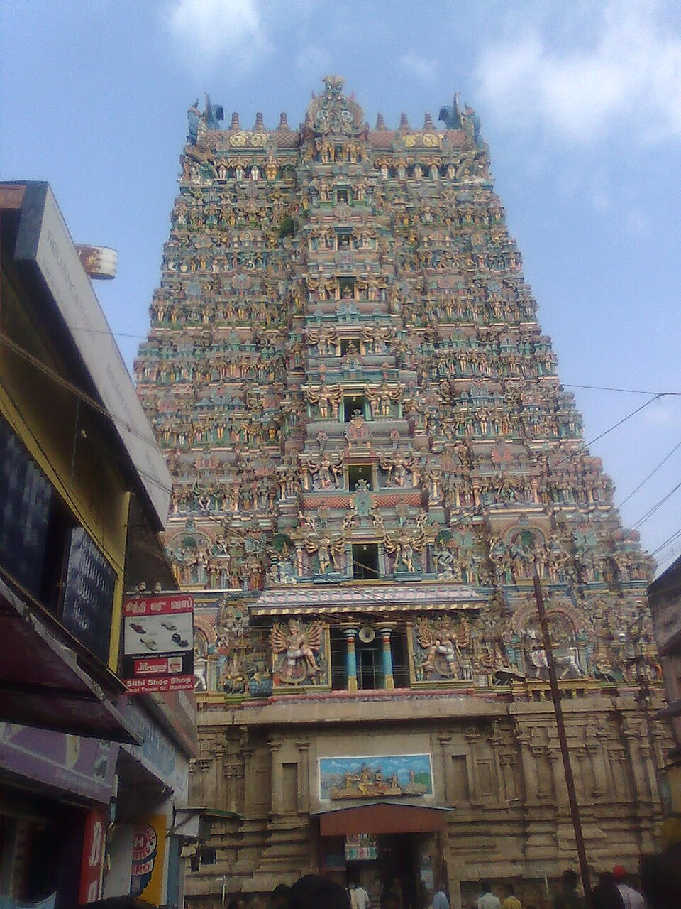
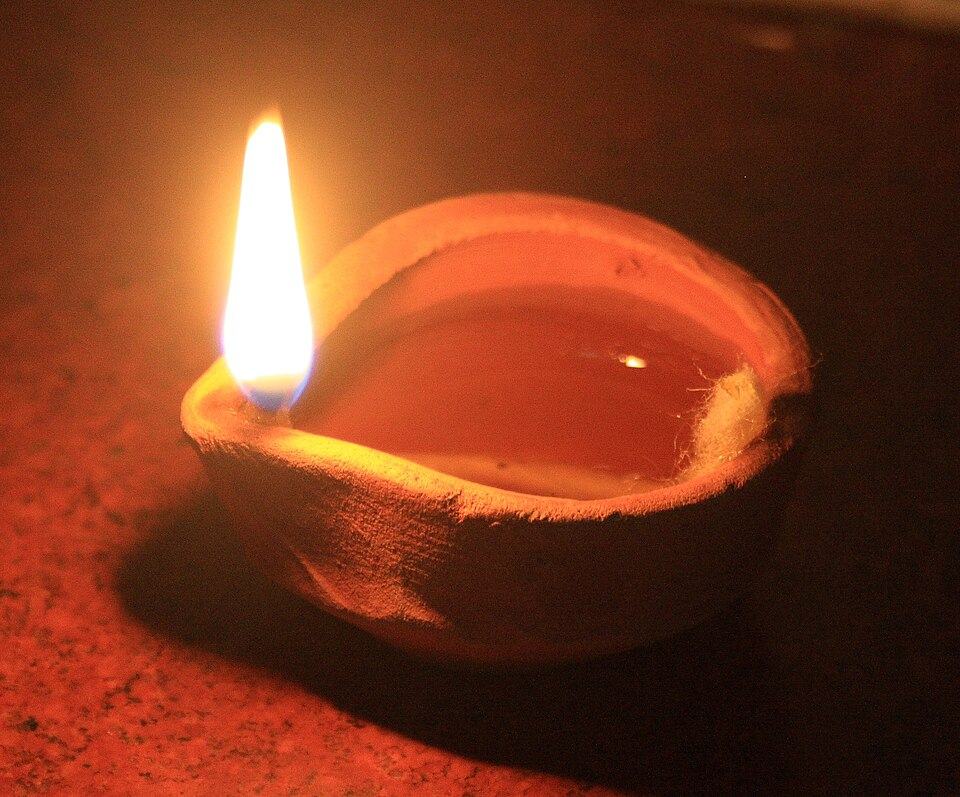
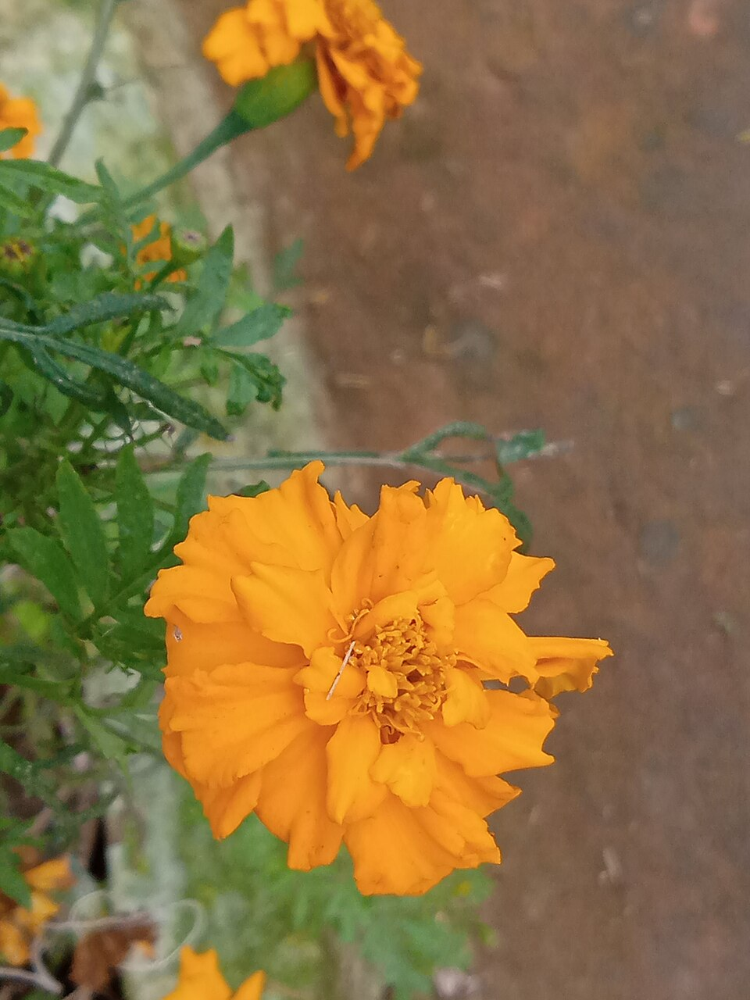
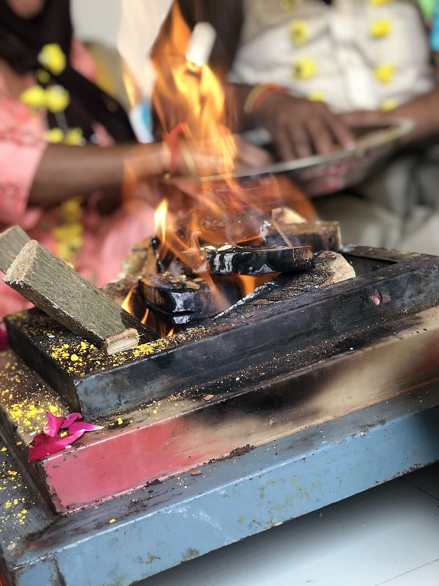
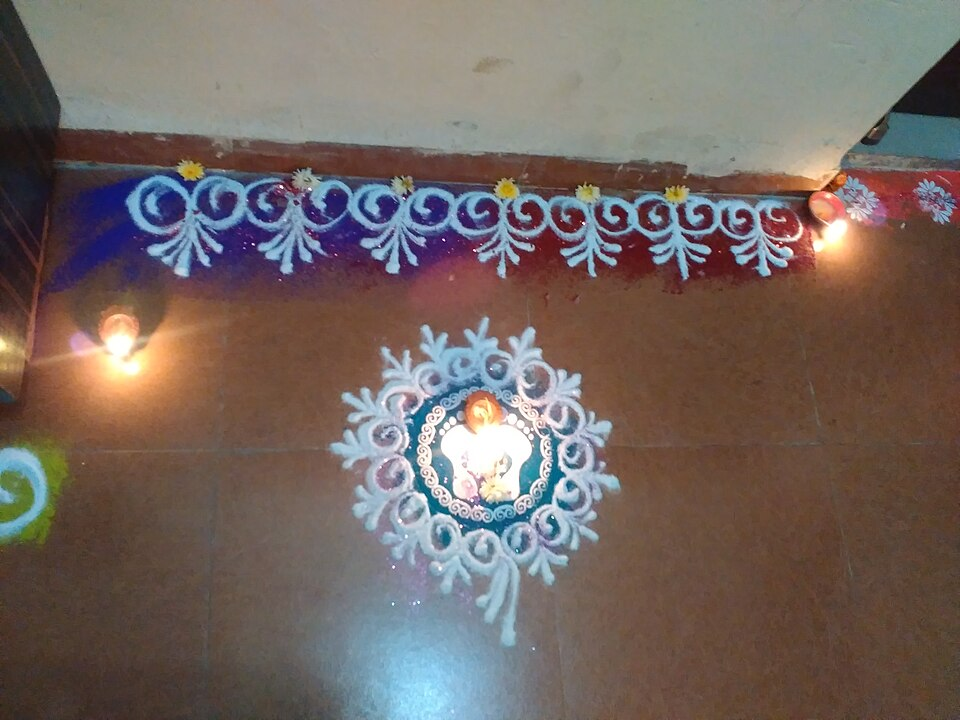
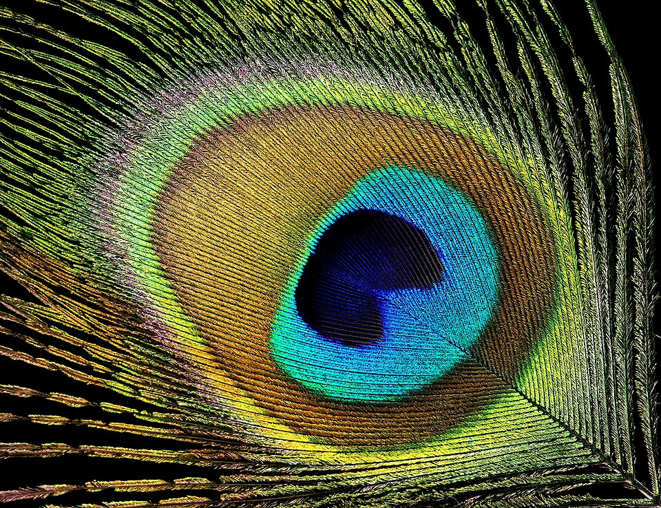
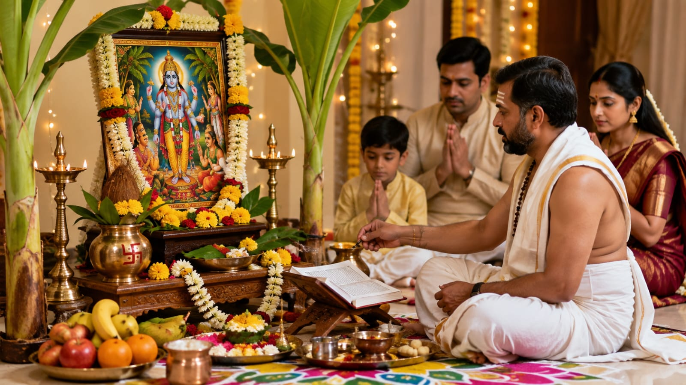
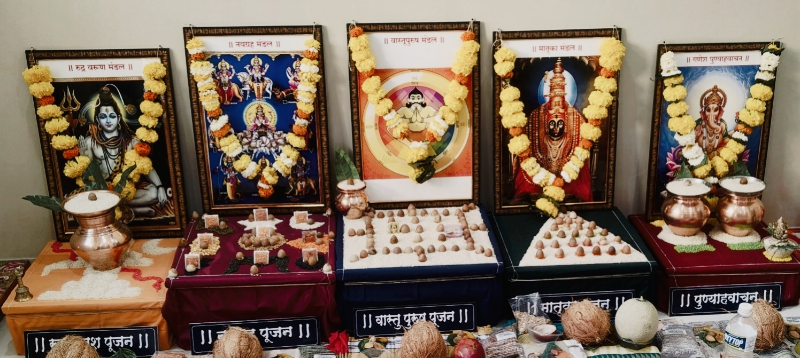

वेदकार्य- प्रशांत राक्षे (गुरुजी)

आपल्या प्रश्नांसाठी अचूक ज्योतिष मार्गदर्शन व योग्य उपाय. प्रत्येक पूजाविधी शास्त्रोक्त पद्धतीने, भक्तिभावाने संपन्न. घरबसल्या व्हिडिओ कॉलद्वारे ऑनलाइन पूजाविधीची सुविधाही उपलब्ध.

वैदिक पंचांगाचा सखोल अभ्यास करून आपल्या धार्मिक कार्यासाठी योग्य दिवस, वेळ आणि मुहूर्त निश्चित केला जातो.
प्रत्येक विधी वैदिक परंपरा, मंत्र आणि शास्त्रानुसार विधिवत संपन्न केला जातो.
श्रीक्षेत्र निरगुडे येथील प्राचीन हनुमान मंदिराच्या पुजारी परंपरेचा वारसा.
प्रत्येक सेवेपूर्वी आवश्यक माहिती, पूजासाहित्य, प्रक्रिया आणि नियोजनाबाबत स्पष्ट मार्गदर्शन.
वैदिक पंचांगाचा सखोल अभ्यास करून आपल्या धार्मिक कार्यासाठी योग्य दिवस, वेळ आणि मुहूर्त निश्चित केला जातो.
दीप, फुले, समिधा, अक्षता, हळद, कुंकू, कलश, तुळस, पंचामृत अशा प्रत्येक पूजासामग्रीचे शास्त्रात स्वतंत्र महत्त्व सांगितले आहे. अशा पवित्र पूजासामग्रीचा योग्य वापर आणि मंत्रोच्चार यांचा सुरेख संगम म्हणजेच परिपूर्ण पूजाविधी.





वेदकार्यच्या सर्व सेवा हिंदू धर्मशास्त्र, मान्यताप्राप्त ग्रंथ आणि वैदिक परंपरेवर आधारित आहेत. अनावश्यक भीती, अंधश्रद्धा किंवा अवास्तव उपायांऐवजी स्पष्ट, शास्त्राधारित आणि प्रामाणिक मार्गदर्शन दिले जाते.
प्रत्येक पूजाविधी, धार्मिक कार्य, वैदिक संस्कार आणि ज्योतिष सेवा धर्मशास्त्र व परंपरेनुसार शास्त्रोक्त पद्धतीने संपन्न केली जाते. प्रत्येक विधीत शुद्धता, पावित्र्य आणि विधियुक्त परंपरेचे पालन केले जाते.
तिथी, वार, नक्षत्र, योग आणि करण या पंचांगाचा सखोल अभ्यास करून प्रत्येक शुभ कार्यासाठी योग्य मुहूर्त निश्चित केला जातो. प्रत्येक निर्णय शास्त्रीय गणना आणि पंचांगाच्या आधारावर घेतला जातो.
प्रत्येक प्रश्नाचे स्पष्ट, वस्तुनिष्ठ आणि शास्त्राधारित मार्गदर्शन केले जाते. आवश्यक असेल तेव्हाच योग्य उपाय सुचवले जातात. कोणतेही अवास्तव दावे किंवा अनावश्यक भीती निर्माण केली जात नाही.
भारत तसेच परदेशातील यजमानांसाठी ऑनलाइन व प्रत्यक्ष धार्मिक सेवा उपलब्ध आहेत. आवश्यकतेनुसार किंवा यजमानाच्या सोयीनुसार व्हिडिओ कॉलद्वारे पूजाविधीची सुविधाही दिली जाते.
पूजाविधी व ज्योतिष सेवा यांसह एकदा नक्की अनुभव घ्यावा अशी विशेष दैवी अनुष्ठाने व प्रभावी साधनादेखील उपलब्ध.

घरातील कोणतेही शुभ कार्य, नवीन सुरुवात किंवा मनातील इच्छा पूर्ण व्हाव्यात यासाठी प्रत्येक पौर्णिमेला आवर्जून करावी, अशी विशेष महापूजा.
अधिक जाणून घ्या →
नवीन घर किंवा बंगला बांधल्यानंतर किंवा फ्लॅट घेतल्यानंतर त्यात राहायला जाण्यापूर्वी केला जाणारा अतिशय महत्त्वाचा विधी.
अधिक जाणून घ्या →
विवाह, करिअर, व्यवसाय, शिक्षण किंवा इतर महत्त्वाचे निर्णय घेण्यापूर्वी आवश्यक असलेले ज्योतिष मार्गदर्शन.
अधिक जाणून घ्या →
स्वतःची जन्मकुंडली तज्ञ ज्योतिषाकडून व्यवस्थितपणे तपासून घेऊन, त्यानुसारच योग्य ते रत्न किंवा रुद्राक्ष धारण करणे अत्यंत गरजेचे असते.
अधिक जाणून घ्या →
वाईट किंवा नकारात्मक शक्तींचा प्रभाव दूर करून आध्यात्मिक संरक्षण मिळवण्यासाठी केले जाणारे विशेष अनुष्ठान.
अधिक जाणून घ्या →
एखादा गंभीर शारीरिक किंवा मानसिक आजार असताना वैद्यकीय उपचारांसोबतच करा, विशेष दैवी अनुष्ठान.
अधिक जाणून घ्या →संपर्क करा – माहिती द्या – सेवा बुकिंग – सेवा संपन्न
फोन, व्हॉट्सॲप मेसेज किंवा ऑनलाईन बुकिंग फॉर्मद्वारे वेदकार्यशी संपर्क साधा. आवश्यकतेनुसार व्यक्तीशः भेट घ्यायची असल्यास अगोदर फोन करून गुरुजींची उपलब्धता निश्चित करा आणि त्यानंतरच प्रत्यक्ष भेट द्या.
पूजाविधी बुक करण्यासाठी कोणाची पूजा आहे, तारीख, स्वतःचे नाव, ठिकाण (लोकेशन) इत्यादी प्राथमिक माहिती द्या. ज्योतिष सेवेसाठी संबंधित व्यक्तीची जन्मतारीख, जन्मवेळ आणि जन्मठिकाणाची माहिती द्या.
पूजा किंवा ज्योतिष सेवा निवडल्यानंतर शुभमुहूर्त, गुरुजींची उपलब्धता, पूजासाहित्य, ब्राह्मण दक्षिणा आणि आवश्यक बाबींवर चर्चा करून आगाऊ रक्कम भरल्यानंतर सेवा बुकिंग निश्चित केली जाईल.
ठरलेल्या दिवशी शुभ मुहूर्तावर पूजाविधी विधिवत संपन्न केला जाईल किंवा आवश्यक ज्योतिष सेवा दिली जाईल. संपूर्ण विधी शास्त्रोक्त पद्धतीने पार पाडला जाईल व आवश्यक माहिती आणि मार्गदर्शन वेळोवेळी दिले जाईल.
सत्यनारायण महापूजा अतिशय विधियुक्त आणि शांत वातावरणात पार पडली. प्रत्येक विधीचे महत्त्व सोप्या भाषेत समजावून सांगितल्यामुळे पूजेत सहभागी होण्याचा आनंद द्विगुणित झाला. संपूर्ण अनुभव अत्यंत समाधानकारक होता.
प्रत्यक्ष पूजा करून घेणे आम्हाला शक्य नसल्यामुळे आम्ही ऑनलाइन पूजेचा पर्याय निवडला. आवश्यक सूचना आणि संपूर्ण माहिती वेळेवर मिळाली. अगदी प्रत्यक्ष पूजेत उपस्थित असल्यासारखा अनुभव आला.
जन्मकुंडलीचे विश्लेषण अतिशय सखोल आणि स्पष्ट पद्धतीने करून सांगितले. कोणतीही अनावश्यक भीती न दाखवता योग्य मार्ग, योग्य उपाय आणि प्रत्येक गोष्टीमागील कारण समजावून सांगितल्यामुळे पूर्ण विश्वास वाटला
फोन, व्हॉट्सॲप मेसेज किंवा वेबसाइटवरील बुकिंग फॉर्मद्वारे वेदकार्यशी संपर्क करून पूजासेवा किंवा ज्योतिष मार्गदर्शन बुक करता येते. त्याचप्रमाणे आधी वेळ ठरवून प्रत्यक्ष भेट घेऊन चर्चा करून सेवा बुक करण्याचा पर्याय देखील उपलब्ध आहे.
प्रत्येक पूजाविधीनुसार आवश्यक असलेल्या पूजासाहित्याची संपूर्ण यादी आधीच यजमानाला दिली जाते. तसेच यजमानाच्या आवश्यकतेनुसार व विनंतीनुसार पूजासाहित्य उपलब्ध करून देण्याची सुविधाही आहे.
नाही. पूजाविधीचा प्रकार आणि यजमानाने निवडलेला ऑनलाईन किंवा प्रत्यक्ष सेवा पर्याय यानुसार पूजाविधी दोन्ही प्रकारे पार पाडले जातात. काही विधी यजमानाच्या घरी प्रत्यक्ष येऊन केले जातात, तर काही विधी ऑनलाईन व्हिडिओ कॉलद्वारे किंवा यजमानाच्या नावाने व गोत्राचा संकल्प करून विधिवत पार पाडले जातात. सामूहिक पूजा हे देखील वेदकार्यचे एक विशेष वैशिष्ट्य आहे.
जन्मतारीख, जन्मवेळ आणि जन्मठिकाण ही माहिती जन्मकुंडली तयार करण्यासाठी, कुंडली विश्लेषण करण्यासाठी किंवा कोणत्याही समस्या अथवा अडचणीचे ज्योतिषशास्त्राद्वारे मार्गदर्शन करण्यासाठी पुरेशी असते. याव्यतिरिक्त कोणतीही अधिक माहिती आवश्यक असल्यास ती वेदकार्यमार्फत यजमानाकडून मागवली जाते.